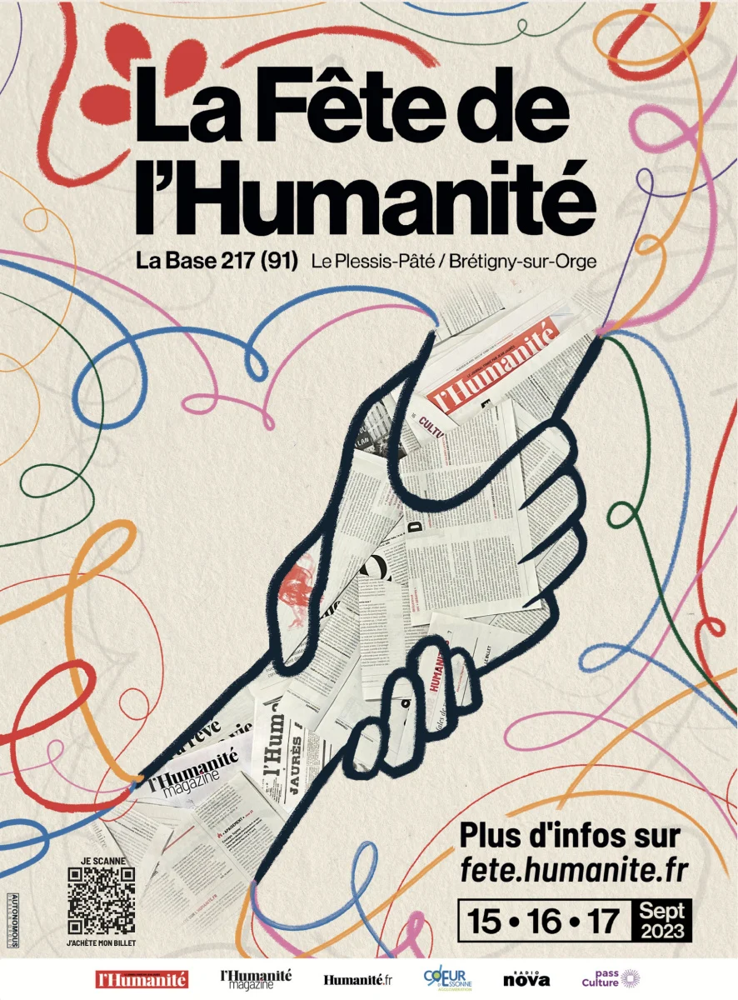

Annonce archivée
La Fête de l’Humanité des 15, 16 et 17 septembre 2023
Date indiquée par Facebook · 15 septembre 2023
Repères éditoriaux
Nous avons relayé l’affiche de la Fête de l’Humanité. Elle donnait rendez-vous à la Base 217, au Plessis-Pâté et à Brétigny-sur-Orge, du 15 au 17 septembre 2023.

Sources
Archive rouge · document diffusé sur Facebook · AR-0002-FB-01585
À lire aussi · Pass culture, non à la punition collective ! · Le lien d’origine